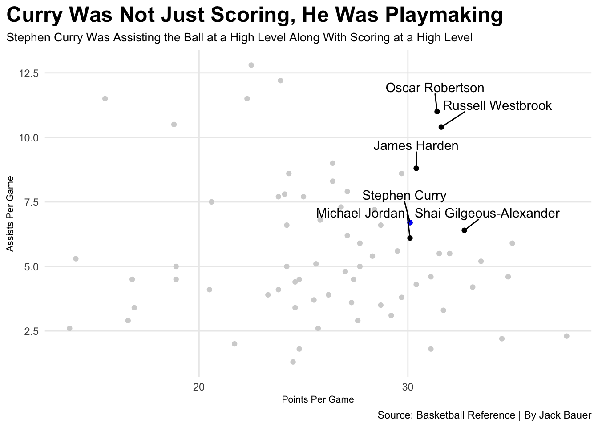
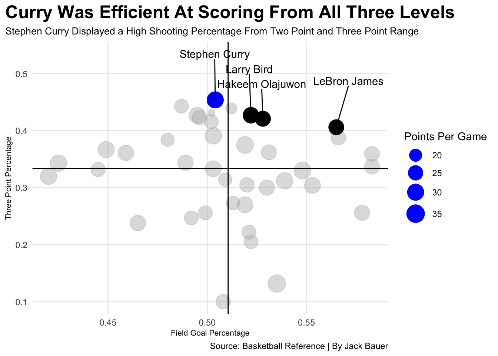

Does Stephen Curry Have the Best MVP Season of all Time?
Basketball
NBA
Author
Jack Bauer
Published
November 17, 2025
Stephen Curry was the first player in NBA history to be voted a unanimous MVP for his 2015-2016 season. Does this mean that he had the best MVP season of all time, or were other players numbers down that season blasting his into proportion?
It is no question that Curry had an amazing season that was deserving of an MVP trophy, but the voting being unanimous raises the discussion of if that season was the best MVP season in NBA history. Let’s look at some data.
A large part of winning an MVP award is scoring, but what makes a season truly special is the ability for the player to score at a high level while still play making. Was Curry just a scorer or was he getting his teammates involved as well?
Code
library(tidyverse)library(ggrepel)library(gt)library(wehoop)mvps <-read_csv("~/Documents/SPMC350/Blog/posts/Curry/mvpyearsfinal.csv")playmakers <- mvps |>filter(PTS >30.0, AST >6.0)curry <- mvps |>filter(FT =="0.908")ggplot() +geom_point(data=mvps, aes(x=PTS, y=AST), color="lightgrey") +geom_point(data=playmakers, aes(x=PTS, y=AST), color="black") +geom_point(data=curry, aes(x=PTS, y=AST), color="blue") +geom_text_repel(data=playmakers,aes(x=PTS, y=AST, label=Player), nudge_y = .9 ) +labs(x="Points Per Game",y="Assists Per Game",title="Curry Was Not Just Scoring, He Was Playmaking",subtitle="Stephen Curry Was Assisting the Ball at a High Level Along With Scoring at a High Level",caption="Source: Basketball Reference | By Jack Bauer" ) +theme_minimal() +theme(plot.title =element_text(size =18, face ="bold"),axis.title =element_text(size =8), plot.subtitle =element_text(size=10), panel.grid.minor =element_blank(),plot.title.position ="plot" )

Curry has always been known as one of the best three point shooters of all time, and an efficient shooter in general. A high point per game total stands out much more when it comes with efficiency. His 2015-2016 season is the only season in NBA history where a player shot 50/40/90 while averaging 30 points per game.
Let’s see where that stacks up against other MVP seasons in history.
Code
library(tidyverse)library(ggrepel)library(gt)library(wehoop)mvps <-read_csv("~/Documents/SPMC350/Blog/posts/Curry/mvpyearsfinal.csv")modern <- mvps |>filter(ThreePCT >0)curry <- mvps |>filter(FT =="0.908")mostefficient <- modern |>filter( PTS >25, FG > .50, ThreePCT > .40)ggplot() +geom_point(data=modern, aes(x=FG, y=ThreePCT, size=PTS), color="grey", alpha = .5) +geom_point(data=mostefficient, aes(x=FG, y=ThreePCT, size=PTS), color="black") +geom_point(data=curry, aes(x=FG, y=ThreePCT, size=PTS), color="blue") +geom_vline(xintercept =0.510475 ) +geom_hline(yintercept =0.333675 ) +scale_size(range =c(3, 8), name ="Points Per Game") +geom_text_repel(data=mostefficient,aes(x=FG, y=ThreePCT, label=Player), nudge_y = .08 ) +labs(x="Field Goal Percentage",y="Three Point Percentage",title="Curry Was Efficient At Scoring From All Three Levels",subtitle="Stephen Curry Displayed a High Shooting Percentage From Two Point and Three Point Range",caption="Source: Basketball Reference | By Jack Bauer" ) +theme_minimal() +theme(plot.title =element_text(size =18, face ="bold"),axis.title =element_text(size =8), plot.subtitle =element_text(size=10), panel.grid.minor =element_blank(),plot.title.position ="plot" )

Win shares and win shares per 48 are great statistics to show how much a player was contributing to their team’s success. Win shares are calculated by taking the player’s total points scored and points allowed compared to the league average, and then distributing the team’s wins by those numbers. Win shares per 48 is a more detailed way to explain win shares, it takes win shares and turns it into a per 48 minute per game statistic.
Players with high win shares per 48 were contributing tp their team’s success every moment they were on the court. Let’s see who the leaders are throughout history.
Code
library(tidyverse)library(ggrepel)library(gt)library(wehoop)mvps <-read_csv("~/Documents/SPMC350/Blog/posts/Curry/mvpyearsfinal.csv")thirtyppg <- mvps |>filter(PTS >30) |>arrange(desc(WSperfourtyeight))thirtyppg |>select(Player, Season, PTS, WS, WSperfourtyeight) |>gt() |>cols_label(PTS ="Points Per Game",WS ="Win Shares",WSperfourtyeight ="Win Shares Per Fourty Eight" ) |>tab_header(title ="Curry Was Largely Contributing to The Warriors Win Total",subtitle ="Stephen Curry's Win Shares and Win Shares Per Fourty Eight Numbers Are Very High" ) |>tab_style(style =cell_text(color ="black", weight ="bold", align ="left"),locations =cells_title("title") ) |>tab_style(style =cell_text(color ="black", align ="left"),locations =cells_title("subtitle") ) |>tab_source_note(source_note =md("**By:** Jack Bauer | **Source:** Sports Reference") ) |>tab_style(locations =cells_column_labels(columns =everything()),style =list(cell_borders(sides ="bottom", weight =px(3)),cell_text(weight ="bold", size=12) ) ) |>opt_row_striping() |>opt_table_lines("none") |>tab_style(style =list(cell_fill(color ="blue"),cell_text(color ="white") ),locations =cells_body(rows = Player =="Stephen Curry") )
Curry Was Largely Contributing to The Warriors Win Total
Stephen Curry's Win Shares and Win Shares Per Fourty Eight Numbers Are Very High
Player
Season
Points Per Game
Win Shares
Win Shares Per Fourty Eight
Kareem Abdul-Jabbar
1971-72
34.8
25.4
0.340
Kareem Abdul-Jabbar
1970-71
31.7
22.3
0.326
Michael Jordan
1990-91
31.5
20.3
0.321
Stephen Curry
2015-16
30.1
17.9
0.318
Michael Jordan
1995-96
30.4
20.4
0.317
Shai Gilgeous-Alexander
2024-25
32.7
16.7
0.309
Michael Jordan
1987-88
35.0
21.2
0.308
Kevin Durant
2013-14
32.0
19.2
0.295
James Harden
2017-18
30.4
15.4
0.289
Oscar Robertson
1963-64
31.4
20.6
0.278
Wilt Chamberlain
1965-66
33.5
21.4
0.275
Michael Jordan
1991-92
30.1
17.7
0.274
Joel Embiid
2022-23
33.1
12.3
0.259
Wilt Chamberlain
1959-60
37.6
17.0
0.245
Bob McAdoo
1974-75
34.5
17.8
0.242
Russell Westbrook
2016-17
31.6
13.1
0.224
Moses Malone
1981-82
31.1
15.4
0.218
Allen Iverson
2000-01
31.1
11.8
0.190
By: Jack Bauer | Source: Sports Reference
Stephen Curry finds himself towards the top of all of these charts, but does that mean he had the best season ever? He definitely had one of the most efficient seasons of all time that led to his team’s success, but there is no way to say that he absolutely had the best MVP season of all time. However, there is no doubt that Curry’s 2015-2016 season should be in those conversations, because it was truly special.